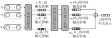
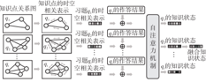
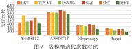

时空相关性融合表征的知识追踪模型*
张凯'，付姿姿，覃正楚 （长江大学 计算机科学学院，湖北 荆州 434023）
摘要：知识追踪通过对知识点的表示来描述习题，以此建模知识状态，最终预测学习者的未来表现。然而目 前的研究在知识点的表示方面既没有建模历史知识点对当前知识点产生的时间关系上的影响，又未能刻画习题 内部各知识点之间产生的空间关系上的作用。为了解决上述问题，提出了时空相关性融合表征的知识追踪模 型。首先，以知识点之间的时间相关程度为基础，建模历史知识点对当前知识点的时间作用；其次，利用图注意 力网络建模习题所包含的若干知识点之间的空间作用，得到蕴涵了时空信息的知识点表示；最后，利用上述知识 点的表示推导出习题的表示，通过自注意力机制得到当前的知识状态。在实验阶段，与五种相关知识追踪模型 在四个真实数据集上进行性能对比，结果表明提出的模型在性能方面有更出色的表现。特别地，在 ASSISTments2017数据集中所提模型比五个对比模型在 AUC、ACC方面分別提升了1.7%~7.7%和7.3% ~2.1%；消 融实验证明了建模知识点之间时空相关影响的有效性，训练过程实验表明了提出的模型在知识点的表示及其相 互作用关系的建模等方面具有一定的优势，应用实例也可看出该模型优于其他知识追踪模型的实际结果。
关键词：知识追踪；知识点表示；时空相关性；图注意力网络
中图分类号：TP183
文献标志码：A
文章编号：1001-3695（2024）05-015-1381-07
doi:10.19734/j. issn. 1001-3695.2023.09.0414
Knowledge tracing model of temporal and spatial correlation fusion
Zhang Kai'， Fu Zizi, Qin Zhengchu
（School of Computer Science, Yangtze Unieersity, Jingshou Hubei 434023, China）
Abstract: Knowledge tracing aims to model the state of knowledge and ultimately predict the future performance of learners by describing exercises through the representation of concepts. However, in terms of the representation of concepts, the current research doesn 't model the influence of historical knowledge concepts on the temporal relationship of the current concepts, nor does it describe the role of the spatial relationship between various concepts in the exercise. In order to solve these problems， this paper proposed a knowledge tracing model characterized by temporal and spatial correlation fusion. First of all, based on the degree of temporal correlation between concepts, it modelled the temporal effect of historical concepts from current concepts. Secondly, it modelled the spatial interaction between several concepts contained in the exercise to obtain the representation of knowledge points containing temporal and spatial information through the ggraph attention network. Finally, it used the above representation of concepts to derive the representation of the exercises, and gqenerated the current state of knowledge through the self-attention mechanism. In the experimental stage, this paper compared the performance of the proposed model with the five relevant knowledge tracing models on four real datasets. The results show that the proposed model has better performance. In particular,compared to the five comparative models on the ASSISTments2017 dataset, the AUC and ACC are improved by 1.7% ~7.7% and 7.3% ~12.1%，respectively. At the same time, the ablation experiment proves the effectiveness of modeling the temporal and spatial correlation between concepts, and the training process experiment shows that the proposed model has certain advantages in the representation of concepts and the modeling of their interaction relationships. The application examples can also show that the model has better practical results than other knowledge tracing models.
Key words: knowledge tracing; concept representation; temporal and spatial correlation; gqraph attention network
0引言
知识追踪是智慧教育领域中一项重要的研究内容，其主要 任务是分析学习行 数据、建模学习者知识状态的变化过程、 预测学习者的未来作答表现。知识追踪模型目前应用于各类 在线教育平台，如国家高等教育智慧教育平台、学堂在线、 Coursera 等，为智慧教育平台实现个性化的教与学提供理论依 据和技术支撑1~3］
知识点的表示是知识追踪领域的关键科学问题，目前的研
究主要集中在两个方面：a）利用历史知识点对当前知识点在 时间上的影响来丰富知识点的表示；b）通过描述习题中若干 知识点之间在空间上的相互关系，来增强知识点的表示。这些 研究试图从时间和空间等多个方面建模知识点之间的相互影 响或作用，从而更加准确地描述知识点。
尽管当前的研究在刻画知识点方面取得了不错的效果，但 仍存在一定的局限性。其中，对知识点的表示仅通过卷积网络 提取时间窗口内知识点之间的影响，没有从全局考虑时间窗口 的大小；仅利用图神经网络聚合习题内部知识点之间空间上的
收稿日期：2023-09-16；修回日期：2023-11-06 基金项目：国家自然科学基金资助项目（62077018）；国家科技部高端外国专家引进计划 资助项目（G2022027006L）；湖北省自然科学基金资助项目（2022CFB132）；湖北本科高校省级教学改革研究资助项目（2023273）
作者简介：张凯（1980—），男（通信作者），湖北武汉人，教授，硕导，博士，主要研究方向图神经网络、贝叶斯深度学习、知识追踪、知识图谱 （kai. zhang@ yangtzeu.edu.cn）；付姿姿（2001—），女，湖北孝感人，硕士研究生，主要研究方向为知识追踪；覃正楚（1998—），男（土家族），湖北宜昌 人，硕士研究生，主要研究方向为知识追踪.
作用，未能注意到知识点之间作用程度的区别。本文提出了时 空相关性融合表征的知识追踪模型，在现有研究的基础上进行 了一定的改进，主要创新如下：
a）针对知识点的表示建模时间影响不充分这一问题，提 出了一种新的方法。首先计算知识点之间的时间相关程度，根 据时间先后信息建模全局历史知识点对当前知识点的影响，得 到知识点的时间相关表示。
b）在上述知识点时间相关表示的基础上，针对知识点的 表示建模空间作用不精准这一问题，提出一种新的方法。首先 计算习题内部各个知识点之间的空间相关程度，以此为依据聚 合习题内部知识点之间的空间作用，得到知识点的时空相关 表示。
1 相关工作
1.1 知识点的传统表示
深度知识追踪（deep knowledge tracing, DKT）［4］首次把深 度模型应用于知识追踪领域，它把学习者与习题的交互数据输 入递归神经网络来建模知识状态，没有考虑到知识点的直接表 示，未显式建模知识点间的相互关系。在DKT 模型的基础上， KTCRS 模型利用矩阵Q将习题映射为知识点，NKTPO 模型 则通过专家标注得到习题中的知识点。刘坤佳等人通过挖 掘习题上下文信息得到新的习题与知识点表示。更进一步地， DKVMN（8］ 模型用一个静态矩阵来存储知识点表示，与这种方 法类似的还有李晓光等人提出的LFKT模型和宗晓萍等 人〔10 提出的 MSKT模型。上述模型的知识点表示一般仅包含 了知识点本身的信息，是知识追踪研究初期常用的方法，属于 知识点的传统表示。这些表示方法忽略了以往多个时刻的知 识点对当前知识点的影响，也没有从空间关系考虑知识点之间 的相互作用。
知识点的表示会受到知识点之间存在的时间或空间上关 系的影响，例如学习者先作答了考查加法的习题，后续作答了 考查乘除混合运算的习题，则后续的知识点会受到先前知识点 在时间上的影响。另一方面，后续习题所包含的乘法和除法知 识点也会受到彼此空间上的影响。
1.2 知识点的时间相关表示
TCN-KT［"！ 模型融合了学习者的先验基础来建模习题的 表示，并利用卷积模型的缺省功能提取时间窗口内习题的相互 影响。CKT！12模型把习题映射为知识点，使用层次卷积建模 历史知识点对当前知识点的作用。MAFKT! 3］模型使用时间卷 积网络刻画了多尺度的知识点表示，描述了不同时刻知识点之 间的相互作用，融合得到了新的知识点表示。ML.B-KT +模型 利用多种学习行为数据建模知识点表示，并通过学习行为间的 协同性和约束性，构建历史知识点对当前知识点的影响。李浩 君等人「51使用双向GRU 网络建模知识点表示，一定程度上描 述了历史知识点对当前知识点间的作用关系。上述研究都是 用不同的方法建模历史知识点对当前知识点的影响，融合时间 信息来丰富知识点的表示。但这种方式在建模知识点间的相 互作用时使用的是片段时间信息，仅考虑了时间窗口内的知识 点相互作用，一般也没有注意到空间关系对知识点之间相互作 用的影响。
1.3 知识点的空间相关表示
GKT 10 模型利用图结构表示知识点之间的空间关系，通 过聚合和更新操作建模知识点的表示。GIKTD模型则在 GKT的基础上把习题映射为图中节点，但没有建模知识点之
间的关系。GAKT-IRT模型将图注意力网络与项目反映理 论相结合，刻画包含空间信息的知识点表示。Tong等人］利 用知识结构中的多种空间关系来模拟知识点之间的影响传播， 以此建模知识点表示。郑浩东等人【20使用知识图来描述知识 点之间的相关性，融入知识状态的变化过程。上述模型都是以 不同的方式建模知识点的空间关系，利用图神经网络的缺省功 能刻画知识点之间的相互作用，以此来描述知识点，但是忽略 了历史多个时刻的知识点对当前知识点的影响。
综上所述，三个方面的知识点表示研究均为通过不同方 式建模知识点之间的相互作用，刻画知识点的表示。然而， 当前研究尚未完整地从时间关系的角度建模历史知识点对 当前知识点的作用关系，未能从空间关系的角度描述习题包 含的若干知识点之间的相互影响。为了更好地表示知识点 及其相互作用关系，本文从时间和空间的角度建模了知识点 的表示。
2 时空相关性融合表征的知识追踪模型
2.1 提出的思想
在学习者与习题交互过程中，历史知识点会影响当前知识 点的表示，比如对三角函数知识点的学习会影响到后续对正弦 函数知识点的学习。另一方面，习题内部的知识点之间也会存 在相互作用，比如在同时具有正弦函数和余弦函数知识点的习 题中，这两个知识点也会相互影响。上述两种知识点之间的影 响方式从时间和空间关系上作用于知识点的表示，现有研究尚 未完整地建模这两种影响。本文提出了一种时空相关性融合 表征的知识追踪模型（knowledge tracing of temporal and spatial correlation fusion,TSKT），利用历史知识点与当前知识点在时 间上的相关性，以及习题中各个知识点在空间上的相关性，从 时空角度来建模知识点之间的相互影响，增强知识点的表示。 模型共分为三个部分：a）输入模块，嵌人表示习题ID、知识点 ID 和学习行为等输入数据；b）时空相关性模块，从时间和空间 上建模知识点之间的相互影响，得到蕴涵时空信息的知识点表 示，以此推导出习题表示，计算当前知识状态；c）预测更新模 块，描述学习者知识状态的变化，预测学习者未来的答题情况。 整体模型的架构如图1所示。

Fig.1 Knowledge tracing model of temporal and spatial correlation fusion
2.2 符号定义
为了准确描述 TSKT模型各部分的功能，表1给出了模型 的相关符号定义。
表1 符号定义
| 符号 | 含义 | 符号 | 含义 |
| N | 知识点的总数 | d | 表示维度 |
| M | 习题的总数 | 表示总时刻 | |
| t | 表示当前时刻 |
2.3 输入模块
知识追踪通过表示知识点、习题和学习时间等数据来建模 知识状态。为了准确描述知识状态，本节对知识点、习题和学 习行为等输入数据进行嵌入表示。
1）知识点嵌入表示
将知识点c，的ID 表示为独热编码O（c，）ERlxN ，设置一 个嵌入矩阵 W。E *，将c，映射成嵌入向量c'。ER xd
所有知识点的嵌人向量合并成知识点矩阵CER^xd '。其 中，每一个d维的行向量表示一个知识点。
2）习题嵌入表示
将习题g，的ID 表示为独热编码 O（g.）E R'xN ，设置一个 嵌入矩阵 W,ER"x ，将q，映射成嵌入向量q，ER'x
使用矩阵QeR"x描述习题与知识点之间多对多的考查 关系，矩阵中的每一行对应一道习题，矩阵中的每一列对应一 个知识点，当习题考查了某知识点时，则矩阵Q中对应位置的 值为1，否则为0。
习题对每个知识点的考查程度存在差异，为了量化上述考 查关系，利用矩阵Q 计算出习题q，对其所包含知识点的考查 权重 w, ER'xN：
其中：2.表示矩阵的第1行，描述了习题q，所考查的知识点； 考查权重w，表示知识点在习题中被考查的程度。
3）学习时间嵌人表示
将习题g：的作答结束时间1表示为独热编码O（b）E R'xT. ，设置一个嵌人矩阵 W,ER7xd ，将 映射为嵌入向量 E R'x：
综上所述，可以得到知识点的嵌入表示c' 、引题的嵌人表 示g 以及学习时间的嵌人表示 。
2.4 时空相关性模块
在学习者与习题交互的过程中，知识点之间会存在时间和 空间上的相互影响，这两种影响会作用到知识点的表示。为了 更准确地描述知识点，利用历史知识点与当前知识点时间上的 相关性建模知识点之间的时间相关影响；通过习题中若干知识 点空间上的相关性建模知识点之间的空间影响，最终得到蕴涵 了时间信息和空间信息的知识点表示。
2.4.1 知识点的时间相关表示
知识点的时间相关表示蕴涵了历史知识点对当前知识点 的影响。具体地，根据知识点之间的时间相关程度描述历史知 识点对当前知识点的相关影响；融入时间位置信息来建模历史 知识点对当前知识点的时间相关影响；最后刻画知识点的时间 相关表示，如图2所示。

Fig. 2 Temporal correlation for concepts
a）知识点之间的时间相关程度。皮尔森相关系数是变量 的协方差与标准差之商，本节用来度量两个知识点之间的时间 相关程度，具体如下：
其中：C'n和c'。分别表示历史知识点和当前知识点的嵌入向
c'，和C，为向量中所有元素的平均值。皮尔森相关系数T-越 大，说明知识点c，与c，之间的时间相关程度越强，C对c，的 相关影响就会越强。
b）相关影响。历史知识点会对当前知识点产生影响，从 而增强当前知识点的表示。为了建模这一过程，首先利用知识 点之间的时间相关程度计算历史知识点对当前知识点的相关 影响：
其中：W，为权重矩阵：en ER'"表示G，受到来自c。的相关 影响。
其次，考虑到每个习题可能包含多个知识点，利用矩阵？ 聚合历史习题9：中所有知识点对c，的相关影响：
其中：i是历史习题的序号，且ie［l,t） niEN;h是习题g：中 所包含的知识点编号，且he ［1,N］ nh E N;emp ER 描述 了习题q：中所有知识点对当前知识点c，的相关影响。
c）时间相关影响。历史习题的相关影响会随着时间产生 变化，时间间隔越久，相关影响对当前知识点的作用越弱。为 了建模这一过程，首先在相关影响e，中融入时间位置信息：
其中： 表示习题9：的作答时间嵌人向量；el ，包含了习题9 对当前知识点c，的相关影响以及对应时间信息。
其次，自注意力机制可以根据时间位置信息获取历史习题 相关影响的权重。建模相关影响随时间变化的过程，具体 如下：
其中：W、W，和 W，均为自注意力机制中的参数矩阵：et，白 Rx"描述了9：对c，的时间相关影响。
d）知识点的时间相关表示。所有历史习题的时间相关影 响共同作用到当前知识点，会增强当前知识点c，的表不。为 了建模上述过程，把所有历史习题对知识点c，的时间相关影 响相加，再与知识点c。的嵌入表示拼接，经过一个 Rel.U函数 得到c，的时间相关表示如下：
其中：④表示拼接操作：W，是参数矩阵；C，ER'x！不仅包含了 知识点本身的信息，也包含了来自历史知识点的时间相关影响。
2.4.2 知识点的时空相关表示
知识点的时空相关表示是在知识点时间相关表示的基础 上，增加了习题内部各个知识点之间的空间作用。具体地，以 矩阵Q为基础构建知识点关系图；根据知识点关系图和时间 相关表示得到知识点的时空相关表示，并推导出习题的时空相 关表示，与答题结果相结合建模知识状态，如图3所示。

Fig.3 Temporal and spatial correlation for concepts
a）知识点关系图。以矩阵Q为基础，为任一习题q：构建 知识点关系图，记作G，G=1V,S：｝。其中，V=1c.10。=13 是节点集，表示习题q：中知识点的集合，每个知识点的特征向 量是其时间相关表示；S， =1（w,2）ICw，G。EV 是边集，每条边 的特征向量为对应两个知识点之间的注意力系数。
b）知识点的时空相关表示。作答习题的过程中，习题内 部的知识点之间会产生空间上的相互作用，采用图注意力网络 建模这一过程。首先，对于知识点关系图G，图注意网络可以 捕获图中每个知识点的邻居信息，得到知识点之间的注意力系 数，具体过程如下：
其中：N，=iuEV.1（u,t）ES：表示c。的邻居知识点；a是权重 向量；W。是图注意力网络中的权重矩阵；G，是c。的时间相关 表示；Qw是c，与c。间的注意力系数，注意力系数可以反映知 识点之间的空间相关程度，Qw。越大，说明c与c。间的空间相 关程度越强。
为了稳定空间相关程度，通过多头注意力机制提取多个注 意力层面的平均值，最后聚合邻居信息得到知识点c。的时空 相关表示：
其中：K 多头注意力的个数；得到的cs，ER'*"是包含了时间 信息和空间信息的新知识点表示，即知识点c的时空相关 表示。
c）习题的时空相关表示。习题q：中可能存在多个知识 点，聚合习题q：中所有知识点的时空相关表示，得到q：的时空 相关表示 gS,ER'xd：
其中：45，蕴涵习题g：的时间信息和空间信息。
2.4.3 融合知识状态
在建模知识状态的过程中，还应考虑学习者的答题结果。 首先，把习题的时空相关表示gS；与对应时刻的答题结果进行 拼接，具体如下：
其中：r;ER'*"是与 gs，同维度的零向量；W，是参数矩阵；得到 的gr, ER'x*包含了习题q：的时空信息与作答结果。
其次，提出的模型利用自注意力机制，根据融合了时空信 息和作答结果的gr，提取历史时刻的权重，建模知识状态：
其中：W，、W，和w，均是自注意力机制中的权重参数；h,E R'x"描述了时刻i的知识状态。
为了增强当前知识状态，将历史知识状态进行归一化，获 取历史时刻知识状态的权重力
其中：00，表示历史知识状态h，的权重，将其作用于h，并与当 前知识状态h，拼接，通过一个全连接层，最终得到包含历史信 息和当前信息的融合知识状态：
其中：W。是权重参数； '，ER'x*是融合了历史知识状态的当
前知识状态。
2.5 预测更新模块
预测更新模块用于预测学习者未来的答题情况，并更新知 识点状态。图4是预测更新过程的示意图。
2.5.1 预测未来表现
考虑到习题间会存在一定的差异，因此拼接上述融合知识 状态h'，和习题的时空相关表示qS，，这样得到的拼接向量包含 了学习者的知识状态和习题信息。将拼接向量输入至tanh函 数激活的全连接层，得到向量i：
其次，将i，输入全连接层，用 sigmoid 函数激活，得到学子 者对习题q，的表现情况的预测：
其中：W，是权重参数。

Process of predictions and updates
2.5.2 更新知识点状态
在学习者与习题的交互过程中，对每个知识点的掌握程度 也在发生变化，因此需要更新每个习题练习前后的知识点状态。
首先初始化一个知识点状态矩阵 KER"x4，矩阵中每一个 d维的行向量表示一个知识点状态，设习题q.完成之前的知识 点状态矩阵力 K，1，习题q.完成之后的知识点状态矩阵为K，。 为了描述从 K到K，这一更新过程，首先根据考查权重以，将 融合知识状态h'，转换为学习者在习题q，考查的知识点上新 增的知识点状态，与上一时刻的知识点状态矩阵相加，具体 如下：
其中：F，是学习者遗忘的知识点状态矩阵。
遗忘的知识点状态可以根据知识点在t时刻的遗忘数据 计算而来，0=1ST,LT,RT｝描述知识点c：在1时刻的遗忘行 为。其中，ST=in>0InEN｝表示学习者第t-1次学习和第t 次学习之间的时间间隔；LT=in≥0InEN｝表示重复学习当前 知识点c：的次数；RT=in>0InEN 表示重复学习当前知识 点c；的时间间隔。首先把学习遗忘数据进行嵌入表示，过程 如下：
其中：W，是学习遗忘数据的嵌入矩阵；得到的o' ER'x*表示 知识点c：的遗忘嵌入向量。把所有的知识点遗忘数据进行嵌 入，合并得到 O'=10'1；0'2;0'N｝ ER"x4即为知识点遗忘矩 阵，其中的每一行表示一个知识点的遗忘嵌入向量。
其次，使用一个用 sigmoid 函数激活的全连接层，将每个知 识点的学习遗忘嵌入向量转换力遗忘权重f,E RYx'；
其中：W, E"x 是权重矩阵；b，是偏置项。
最后，将遗忘权重作用于上一时刻的知识点状态矩阵 K.I，得到学习者遗忘的知识点状态P,ER以x "。计算过程 如下：
2.6 损失函数
在训练过程中，选择用交叉嫡损失函数来最小化预测值了. 和真实标签r，之间的差异性。当交叉熵越小时，预测值与真 实值就越接近，表示如下：
由于交叉熵损失函数是凸函数，所以在训练时使用梯度下 降法学习参数，使得模型能够更准确地预测学习者未来的表现。
3 实验结果与分析
TSKT 模型的主要工作集中于：知识点的时间相关表示、时 空相关表示、习题的时空融合表示。为了全面对比分析 TSKT 模型的性能，本章选取了 DKT"】 、DKVMN［8］ 、TCN-KT"）、 GKT 6、SKT 五个模型作为对比模型。具体原因如下：
- a） DKT 是首个将深度学习引入知识追踪的模型，它使用 独热编码作为习题的表征，虽然没有蕴涵时空相关信息，但力 后续的研究开辟了新的方向。
- b）DKVMN使用静态矩阵来存储知识点表示，虽然没有考 虑到知识点之间的相互影响，但由知识点表示的线性组合形成 习题的表示。
- c）TCN-KT建模了习题在时间窗口内的相互影响，刻画了 习题的时间相关表示。
- d） GKT 刻画了知识点在空间上的相互作用，聚合邻居信 息，得到了知识点的空间相关表示。
- e）SKT 根据知识点空间关系的差异设计了两种不同的传播 机制，通过融合两种邻居信息来建模知识点的空间相关表示。
上述模型的研究开始于对习题的表征，细化的研究着重于 知识点的时间和空间相关表示，TSKT 将从知识点和习题的时 空融合表示等方面与这五个模型在多个评价指标上进行对比。
3.1 实验方法
TSKT模型以知识点ID、习题ID 等为输入，以学习者的作 答预测值为输出，具体的实验步骤如下：
a）建模知识点的时间相关表示。对数据集中知识点的ID 进行嵌入表示，计算知识点之间的时间相关程度，并融入时间 位置信息，建模知识点之间的时间相关影响，得到知识点的时 间相关表示。
b）建模知识点的时空相关表示。构建习题蕴涵的知识点 关系图，计算知识点之间的空间相关程度，建模知识点的时空 相关表示cS。，通过聚合同一习题中的知识点时空相关表示，可 以得到习题的时空相关表示 gS。
- c）建模融合知识状态。把不同时刻的学习者作答结果映 射成零向量，与习题的时空相关表示拼接。通过自注意力机制 建模不同时刻的知识状态 h；并计算权重，得到融合知识状 态 '。
- d）预测作答结果。根据学习者当前的知识状态，结合学 习者作答习题的时空相关表示，得到预测的作答结果。
- e）更新知识状态。定义一个知识点状态矩阵，将学习者 的遗忘数据映射成嵌入向量并转换为遗忘权重，从而计算得到 当前的知识点状态矩阵K，。
3.2 数据集
为了验证 TSKT 模型的有效性，分别在 ASSISTments2012（21） ASSISTments2017［22］ 、Slepemapy. cz ［23］ 以及 Junyi Academy2）四 个真实数据集上进行实验，以下分别简称为ASSISTI2、ASSIST17、Slepemapy 和Junyi。表2展示了各数据集的基本信息。
表2 数据集简介
| 数据集 | 学习者数 | 习题交互数 | 知识点数 |
|---|---|---|---|
| ASSIST12 | 46 674 | 5 818 868 | 266 |
| ASSIST17 | 1709 | 942 816 | 102 |
| Slepemapy | 87 952 | 10 087 305 | 1 458 |
| Junyi | 238 120 | 26 666 117 | 684 |
3.3 实验环境
实验环境如表3所示。在每个数据集中，将80%的数据 划分为训练集，20%的数据划分为测试集；将训练集中20％的 数据划分为验证集，用于选择最佳模型的超参数。
参数的初始化选择均值和标准差为零的正态分布随机初 始化，初始学习率设置力0.001，学习率每经过10轮训练会衰 减0.1倍；batch-size 设置力32；选择交叉熵损失函数和 Adam 优化器。
表3 实验环境
| 实验环境 | 参数 | 实验环境 | 参数 |
| 操作系统 | Windows 11 | Python | 3.10 |
| CPU | Intel Core i9-9900K CPU@3.60 GHz | PyTorch | 1.10.2 |
| GPU | NVIDIA GeForce RTX 3080 Ti | 内存 | 64 GB |
3.4 性能对比实验
使用曲线下面积（area under curve,AUC） 和准确率（accuracy,ACC）作模型的评价指标。AUC 是 ROC（ receiver operating characteristic）曲线与坐标轴围成图形的面积，其取值在 0.5~1，值越大，说明模型预测性能越好，若 AUC 的值为0.5， 说明模型是随机预测模型。ACC 是正确预测结果占所有预测 结果的百分比，ACC的值越大，说明模型的预测结果越准确。
图5展示了TSKT模型与五个对比模型在四个数据集上 的AUC值。其中，横坐标为数据集，纵坐标为 AUC 的取值。
由图5可以看出，TSKT 模型在四个真实数据集上的表现 最好，其AUC值分别为0.788 3、0.801 7、0.8441 和 0.8739。 在Slepemapy 数据集中，TSKT 比第二名的GKT模型要高出 2.41%，分析其原因可能是GKT模型只建模了知识点之间的 空间作用，忽略了历史作答习题中的知识点对当前知识点的时 间相关影响，导致实验结果略低于 TSKT模型。在 ASSIST17 数据集中，TSKT 模型的AUC值比GKT 模型的0.784高出 1.7%，比DKVMN 模型的0.7239高出7.7%，分析其原因可 能是 DKVMN模型利用知识点来表示习题，但未能建模知识点 在时空上的相互作用关系，因此性能表现相较于 TSKT模型有 所欠缺。实验结果也验证了 TSKT 模型从时间和空间两个角 度建模知识点表示的有效性。


图6展示了TSKT模型与五个对比模型在四个数据集上 的ACC值。由图6可以看出，TSKT模型在四个真实数据集上
的ACC 值分别0.7822、0.8030、0.7937和0.8457，对比其 余模型均取得了一定的优势。值得注意的是，在 ASSIST17数 据集中，TSKT 模型的准确率要比SKT 模型的0.730高出 7.3%，比 TCN-KT模型的0.682 高出12.1%。SKT模型根据 知识点间不同的空间关系，设计了两种不同的传播机制，以此 建模知识点的空间相关表示，但没有完整建模知识点之间的时 间相关影响，因此性能表现略差于 TSKT 模型。TCN-KT模型 利用卷积网络描述时间窗口内历史对当前的影响，但这种片段 式的时间信息不足以囊括所有历史习题对当前习题的影响，也 忽略了习题内部知识点之间的空间关系，所以模型的准确率相 较于 TSKT模型存在一定的差距。TSKT模型在考虑知识点空 间相关影响的同时还注意到了知识点的时间相关影响，刻画了 知识点的时空相关表示，并推导出了习题的时空相关表示。实 验结果充分表明了 TSKT模型建模知识点时空相关表示，以及 习题时空相关表示的有效性。
3.5 消融实验
为了进一步对比分析知识点时间和空间上的相互影响对 知识点最终表示的作用，设计了 TSKT-A模型，消融TSKT模型 中历史知识点对当前知识点的时间相关影响，直接把知识点之 间的相关影响映射到知识点表示中；设计了 TSKT-B 模型，消 融 TSKT模型中习题内部若干知识点之间空间相关影响，把图 注意力网络用简单的聚合功能替代。相关实验结果如表4、5 所示。
表4 不同模型的AUC值
| 模型 | 数据集 | |||
|---|---|---|---|---|
| ASSIST12 | ASSIST17 | Slepemapy | Junyi | |
| TSKT-A | 0.768 2 | 0.791 7 | 0.840 5 | 0.869 5 |
| TSKT-B | 0.735 8 | 0.756 0 | 0.809 1 | 0.822 4 |
| TSKT | 0.788 3 | 0.801 7 | 0.844 1 | 0.8739 |
| 模型 | 数据集 | |||
|---|---|---|---|---|
| ASSIST12 | ASSIST17 | Slepemapy | Junyi | |
| TSKT-A | 0.774 1 | 0.800 1 | 0.788 2 | 0.830 5 |
| TSKT-B | 0.7228 | 0.754 4 | 0.753 3 | 0.787 8 |
| TSKT | 0.788 2 | 0.8030 | 0.793 7 | 0.845 7 |
从表4、5中可以看出，没有建模知识点空间相关影响的 TSKT-B 模型性能表现最差（表4第二行和表5第二行），其次 是没有建模知识点时间相关影响的TSKT-A 模型，原本的 TSKT 模型表现最好。这一实验结果验证了知识点之间的相互 影响会作用于知识点的最终表示这一假设，证明了 TSKT模型 中建模知识点的时间相关表示和时空相关表示的有效性。
3.6 训练过程实验
为了分析TSKT模型的训练效率，设计了训练过程对比实 验，将TSKT模型在四个真实数据集上与对比模型进行迭代次 数对比，即比较各个模型在达到最优AUC 值的情况下所需的 迭代次数。迭代次数反映了模型的训练效率，迭代次数越低， 模型达到最优性能所需要的训练时间越少，模型的训练效率越 高。相关实验结果如图7所示。

从图7的实验结果可以看出，TSKT模型在四个数据集上 达到最优性能的迭代次数均为最小。最低值出现在 Junyi数 据集上，仅需要小于350轮迭代即可达到最优性能；最高值出 现在 ASSIST17 数据集上，需要超过550轮迭代达到最优性能。 实验结果说明了 TSKT模型的训练效率最高。
3.7 模型的实例
为了验证TSKT模型在实际学习中的可用性，指导学生设 计开发了"学习数据与认知模型双驱动的跨模态多尺度自适 应智慧学习环境（CMA-ILE）"。该环境包括了习题1D、知识 点ID 和习题作答时间等信息，具体地，包含102个知识点和1 709名学习者的真实作答数据等信息。以此为基础建模知识 点之间的时间影响和空间作用，得到知识点的时空相关表示， 完成对学习者知识状态的判断和预测。同时，还集成了若干对 比模型，以便对比分析各个模型在实际学习环境的性能并进行 评估。智慧学习环境的部分功能如图8所示。

Fig.8 Intelligent learning environment-knowledge concepts relationship 具体应用实例包括在2022—2023年第二学期讲授的《人 工智能》课程中76名学生的学习行为数据，《机器学习》课程 中63名学生的学习行为数据，对隐私信息进行脱敏处理，保存 若干次作业的答题记录。具体实验步骤参见3.1节，再将其中 的80%用作训练集，20% 用作测试集，计算五个对比模型利 TSKT 模型的平均预测准确率，结果如表6所示。
表6 智慧学习环境中的准确率对比
| 指标 | 模型 | |||||
|---|---|---|---|---|---|---|
| DKT | TCN-KT | DKVMN | CKT | SKT | TSKT | |
| ACC | 0.726 | 0.765 | 0.724 | 0.793 | 0.782 | 0.801 |
从表6 可以看出，相较于只建模时间窗口内历史习题对当 前习题影响的 TCN-KT 模型，TSKT模型不仅扩充建模了上述 局部知识点之间的时间影响，同时把知识点的空间关系融入知 识点的表示，实验结果表明，TSKT 模型的准确率提高了 3.6%，验证了 TSKT模型建模知识点时空相关表示的有效性， 以及在实际学习环境中的效果。进一步地，相较于只建模了知 识点空间关系的GKT 和 SKT模型，TSKT模型在此基础上还刻 画了历史知识点对当前知识点的影响，计算出知识点的时空相 关表示。实验结果表明，TSKT 模型的建模方式在准确率方面 分别提高了0.8%和1.9%。上述实际环境中的对比结果能够 证明TSKT模型对实际学习情况的建模更加准确，验证了该模 型在实际学习环境中的可用性。
4 结束语
本文提出了一个时空相关性融合表征的知识追踪模型， 用于解决现有研究尚未从时间和空间的角度建模知识点表 示及其相互作用的问题。TSKT 模型首先以知识点之间的时 间相关程度为基础，描述了历史知识点对当前知识点的影
响，提炼出知识点的时间相关表示；其次使用图神经网络建 模了习题中知识点之间的空间作用，得到包含时间和空间信 息的知识点表示；最后聚合习题中的知识点，与答题结果结 合，采用自注意力机制建模知识状态，并把历史知识状态融 合到当前知识状态。与五个对比模型在四个真实数据集上 的实验结果表明，TSKT模型的性能较为出色，同时验证了包 含时间和空间信息的知识点表示的有效性。综上所述，TSKT 模型达到了更好的效果和效率，验证了建模知识点之间相互。 作用的必要性和可行性。未来将继续深入研究知识点的表 示及其相互作用关系，以及知识点间的相互作用对习题表征 带来的影响。
参考文献：
- ［1］ 刘恒宇，张天成，武培文，等，知识追踪综述［J］，华东师范大学 学报：自然科学版，2019（5）：1- 15.（Liu Hengyu, Zhang Tiancheng, Wu Peiwen,et al. A review of knowledge tracing ［ J］. Journal of East China Normal University : Natural Science,2019 （5）：1-15.）
- ［2］ 曾凡智，许露倩，周燕，等．面向智慧教育的知识追踪模型研究综 述［J］．计算机科学与探索，2022,16（8）：1742-1763.（Zeng Fanzhi, Xu Luqian, Zhou Yan,et al. Review of knowledge tracing model for intelligent education ［J］. Journal of Frontiers of Computer Science and Technology ,2022,16（8） ： 1742-1763.）
- ［3］ 张暖，江波．学习者知识追踪研究进展综述［J］．计算机科学， 2021,48（4）：213-222. （Zhang Nuan, Jiang Bo. Review progress of learner knowledge tracing ［J］. Computer Science, 2021 , 48 （4）： 213-222.）
- L4」 Piech C, Bassen J, Huang J, et al. Deep knowledge tracing ［C］// Proc of the 29th Annual Conference on Neural Information Processing Systems. Red Hook, NY : Curran Associates Inc.，2015 : 505-513.
- ［5］ 王文涛，马慧芳，舒跃育，等.基于上下文表示的知识追踪方法 ［J］. 计算机工程与科学，2022,44（9）：1693-1701.（Wang Wentao, Ma Huifang, Shu Yueyu, et al. Knowledge tracing based on contextualized representation ［J］. Computer Engineering & Science， 2022,44（9）：1693-1701.）
- ［6］ 魏思，沈双宏，黄振亚，等，融合通用题目表征学习的神经知识追 踪方法研究［J］． 中文信息学报，2022,36（4）：146-155.（Wei Si, Shen Shuanghong, Huang Zhenya,et al. Integrating gqeneral exercises representation leaning into neural knowledge tracing ［J］. Journal of Chinses Information Processing,2022,36（4）：146-155.）
- L7」 刘坤佳，李欣奕，唐九阳，等.可解释深度知识追踪模型［J］． 计 算机研究与发展，2021,58（12）：2618-2629.（Liu Kunjia, Li Xinyi, Tang Jiuyang,et al. Interpretable deep knowledge tracing ［J］. Journal of Computer Research and Development, 2021,58 （12）：2618-2629.）
- ［8］ Zhang Jiani,Shi Xingjian, King I, et al. Dynamic key-value memory networks for knowledge tracing ［ C］// Proc of the 26th International Conference on World Wide Web. Geneva: International World Wide Web Conterences Steering Committee,2017:765-774.
- ［9］ 李晓光，魏思齐，张昕，等.LFKT：学习与遗忘融合的深度知识追 踪模型［J］. 软件学报，2021,32（3）：818-830. （Li Xiaoguang， Wei Siqi, Zhang Xin,et al. LFKT: deep knowledge tracing model with leamning and forgetting behavior merging ［J］. Journal of Software,2021,32（3）：818-830.）
- ［10］宗晓萍，陶泽泽.基于掌握速度的知识追踪模型［J］．计算机工 程与应用，2021,57（6）：117- 123. （Zong Xiaoping, Tao Zeze. Knowledge tracing model based on mastery speed［J］.Computer Engineering and Application,2021,57 （6）：117-123.）
- ［11］ 王璨，刘朝晖，王蓓，等.TCN-KT：个人基础与遗忘融合的时间卷 积知识追踪模型［J］.计算机应用研究，2022,39（5）：1496-
- 1500.（Wang Can,Liu Zhaohui, Wang Bei, et al. TCN-KT :temporal convolutional know-ledge tracking model based on fusion of personal basis and forgetting ［ J］. Application Research of Computers， 2022,39（5）：1496-1500.）
- ［12］ Shen Shuanghong, Liu Qi, Chen Enhong, et al. Convolutional knowledge tracing: modeling individualization in student learning process ［C］// Proc of the 43rd International ACM SIGIR Conference on Research and Development in Information Retrieval. New York : ACM Press,2020:1857-1860.
- ［13］段建设，崔超然，宋广乐，等.基于多尺度注意力融合的知识追踪 方法［J］.南京大学学报：自然科学版，2021,57 （4）：591-598. （Duan Jianshe, Cui Chaoran, Song Guangle,et al. Knowledge tracing based on multi-scale attention fusion LJJ. Journal of Nanjing University: Natural Science,2021,57 （4） ： 591-598.）
- ［14］张凯，覃正楚，刘月，等.多学习行为协同的知识追踪模型［J］. 计算机应用，2023,43（5）：1422-1429.（Zhang Kai, Qin Zhengchu,Liu Yue, et al. Multi-learning behavior collaborated knowledge tracing model ［J］. Journal of Computer Applications, 2023, 43 （5）：1422-1429.）
- ［15］ 李浩君，方璇，戴海容，基于自注意力机制和双向 GRU 神经网络 的深度知识追踪优化模型［J］. 计算机应用研究，2022,39（3）： 732-738. （Li Haojun, Fang Xuan, Dai Hairong. Deep knowledge tracking optimization model based on self-attention mechanism and bidirectional GRU neural network ［ J］. Application Research of Computers,2022,39 （3）：732-738.）
- ［16］ Nakagawa H,Iwasawa Y, Matsuo Y. Graph-based knowledge tracing： modeling student proficiency using graph neural network ［ CJ// Proc of IEEE/WIC/ACM International Conference on Web Intelligence. New York : ACM Press,2019: 156-163.
- ［17］ Yang Yang, Shen Jian, Qu Yanru,et al. GIKT : a graph-based interaction model for knowledge tracing ［ C］// Proc of European Conference on Machine Learing and Knowledge Discovery in Databases. Cham： Springer,2021:299-315.
- ［18」董永峰，黄港，薛婉若，等．融合 IRT的图注意力深度知识追踪模 型［J］. 计算机科学，2023,50（3）：173- 180.（Dong Yongfeng， Huang Gang, Xue Wanruo, et al. Graph attention deep knowledge tracing model integrated with IRT ［ J］. Computer Science, 2023， 50（3）：173-180.）
- ［19］ Tong Shiwei, Liu Qi, Huang Wei, et al. Structure-based knowledge tracing: an influence propagation view ［ C］// Proc of IEEE International Conference on Data Mining. Piscataway, NJ: IEEE Press， 2020:541-550.
- ［20］郑浩东，马华，谢颖超，等．融合遗忘因素与记忆门的图神经网络 知识追踪模型［J］．计算机应用，2023,43（9）：2747-2752. （Zheng Haodong, Ma Hua, Xie Yingchao, et al. Knowledge tracing model based on graph neural blending with forgetting factors and memory gate ［J］. Journal of Computer Applications, 2023,43 （9） ：2747-2752.）
- ［21］ Feng Mingyu, Hefferan N, Koedinger K. Addressing the assessment challenge with an online system that tutors as it assesses ［ J］. User Modeling and User-Adapted Interaction,2009, 19（8） ：243-266.
- ［22］ Wang Yutao, Heffernan N T, Heffernan C. Towards better affect detectors: effect of missing skills, class features and common wrong answers ［C］// Proc of the 5th International Conference on Learing Analytics and Knowledge. New York : ACM Press,2015: 31-35.
- ［23］ Papousek J, Pelanek R, Stanislav V. Adaptive geography practice data set ［J］. Journal of Learning Analytics,2016,3（2）：317-321.
- ［24］ Chang H S, Hsu H J, Chen K T. Modeling exercise relationships in E-leamning: a unified approach ［ C］// Proc of the 8th International Conference on Educational Data Mining. 2015: 532-535.


{kind=link}
{kind=link}
{kind=link}
{kind=link}
{kind=link}
{kind=link}
{kind=link}
{kind=link}
{kind=link}
{kind=link}
{kind=link}
{kind=link}
{kind=link}
{kind=link}
{kind=link}
{kind=link}
{kind=link}
{kind=link}
{kind=link}
{kind=link}
{kind=link}
{kind=link}
{kind=link}
{kind=link}
{kind=link}
{kind=link}
{kind=link}
{kind=link}
{kind=link}
{kind=link}
{kind=link}
{kind=link}
{kind=link}
{kind=link}
{kind=link}
{kind=link}
{kind=link}
{kind=link}
{kind=link}
{kind=link}
{kind=link}
{kind=link}